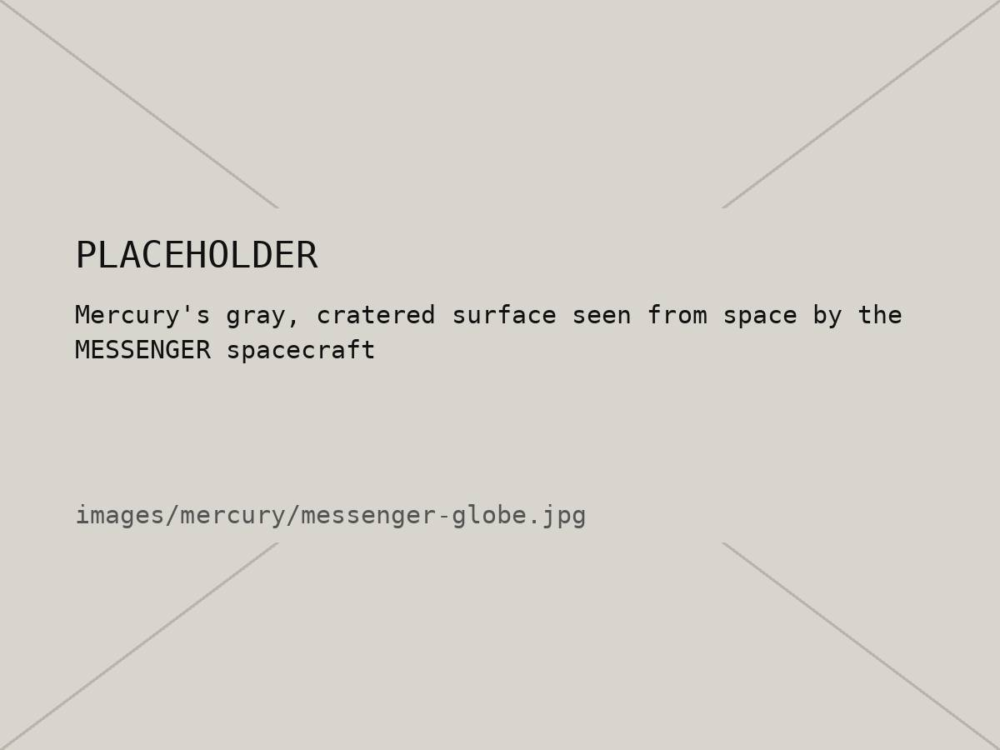
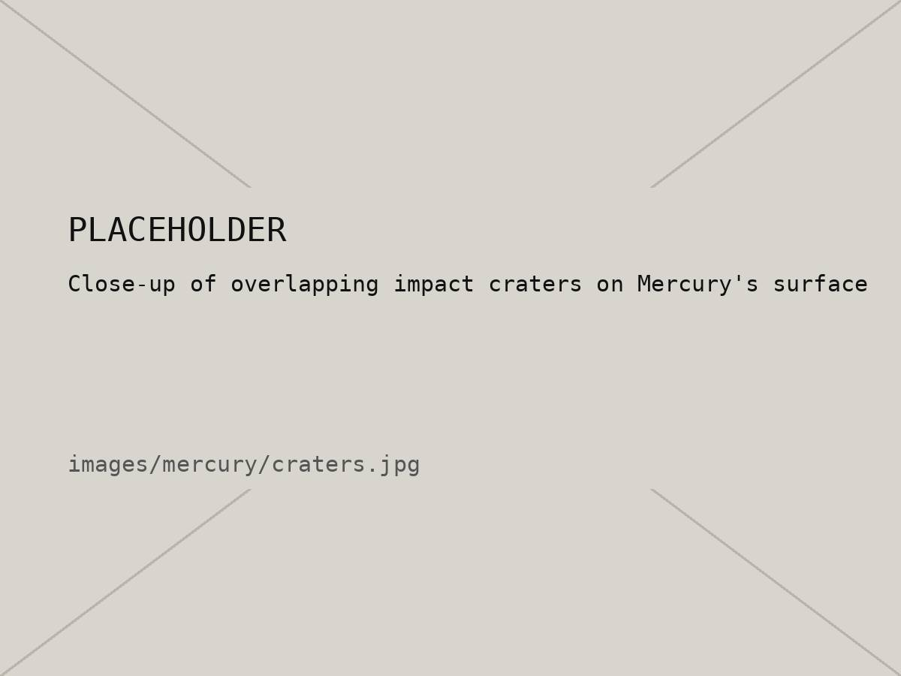

02 / 10 — Planet 1
Mercury
Smallest planet, closest to the Sun, wildest temperature swings.
01 — Intro
Mercury is the smallest planet, only a little bigger than our Moon, and it's the closest one to the Sun. It whips around the Sun in just 88 days, faster than any other planet.
You'd think that makes it the hottest planet, but it isn't (that's Venus). Mercury barely has an atmosphere to hold heat in, so the side facing the Sun bakes while the night side freezes. The surface is gray and covered in craters, kind of like the Moon.
02 — Quick facts
| Distance from the Sun | About 58 million km (0.4 AU) |
|---|---|
| Diameter | 4,879 km |
| Length of a year | 88 Earth days |
| Sunrise to sunrise | 176 Earth days |
| Temperature | 430 °C day · −180 °C night |
| Moons | 0 |
03 — Images


04 — Day side / night side
Same planet, very different weather. Flip between the side facing the Sun and the side facing away.
Sunlit side
430 °C806 °F. Hot enough to melt lead.